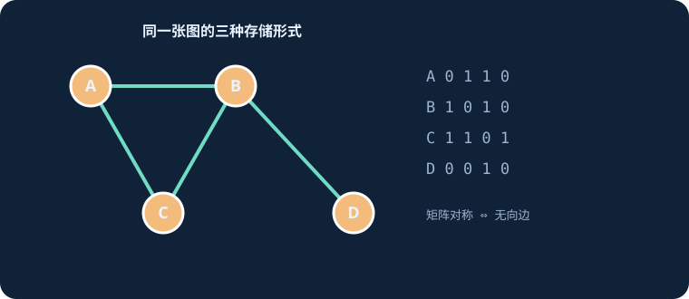

GRAPH THEORY / MATHEMATICAL LANGUAGE
第2章 图论基础
一张图由什么组成，决定了它能回答什么问题。
从现实关系到数学对象
图论研究由顶点和边组成的离散结构。给定顶点集合 与边集合 ，图记作 。例如，在地铁网络中，顶点可以是车站，边可以表示两站之间存在直达轨道；在引用网络中，顶点是论文，有向边表示一篇论文引用另一篇论文。
抽象的关键不是画出一张漂亮的图，而是规定关系的含义。若边表示“认识”，通常不区分谁先认识谁；若边表示“引用”，方向不可丢失；若边表示“飞行”，边权可能是飞行时间或票价。方向、权重、平行边、自环和时间戳都属于模型语义，不是可随意忽略的格式细节。

先判断你处理的是哪一种图
| 类型 | 数学含义 | 典型场景 |
|---|---|---|
| 无向图 | 边是无序顶点对 {u,v} | 互相认识、共同合作 |
| 有向图 | 边是有序顶点对 (u,v) | 引用、关注、网页链接 |
| 加权图 | 边附带数值属性 w(u,v) | 距离、时长、交易额 |
| 多重图 | 同一顶点对可有多条边 | 多条航线、重复交易 |
| 二分图 | 顶点分成两组，边只跨组连接 | 用户—商品、作者—论文 |
简单无向图不允许自环和重复边。若原始数据中同一对用户发生了 20 次交易，简单图只能记录“有交易关系”；若研究目标是交易次数或交易时间，就需要权重、事件表或多重图，而不能把 20 次事件无说明地压成一条边。
度数与握手定理
无向图中，顶点 v 的度数 是与它相接的边数。每条无向边恰好为两个端点各贡献一次度数，因此
因此无向图的奇度顶点个数一定是偶数。有向图则分别统计入度和出度：所有顶点入度之和等于边数，所有顶点出度之和也等于边数。不要把有向图的入度、出度与无向图度数混为一谈。
三种常见存储方式
邻接矩阵用 n×n 矩阵 A 表示连接关系。简单无向图的矩阵对称；若没有自环，对角线为 0。查询两点是否相邻很快，但稀疏大图会浪费大量空间。
邻接表为每个顶点保存邻居列表，适合稀疏网络和遍历算法。边列表直接保存每条边的两个端点，适合数据交换和批量导入。无论选哪种表示，节点顺序、节点 ID 与方向约定都必须明确。
切换同一张图的表示方式
节点顺序： A、B、C、D
A B C D
A [ 0 1 1 0 ]
B [ 1 0 1 0 ]
C [ 1 1 0 1 ]
D [ 0 0 1 0 ]A: B, C
B: A, C
C: A, B, D
D: C(A, B)
(A, C)
(B, C)
(C, D)三种表示编码的是同一组四条边。
路径、连通性与树
游走（walk）允许重复顶点和边；迹（trail）不重复边；路径（path）通常要求不重复顶点；环（cycle）是起点和终点相同的闭合路径。教材和软件对 path 的细节约定可能略有差异，描述算法时应明确采用的定义。
无向图中，若任意两顶点之间都存在路径，图称为连通图。若不连通，顶点集合会分成若干连通分量。树是连通且无环的无向图；若有 n 个顶点，树恰好有 n−1 条边。树中的任意两点之间存在唯一简单路径。
二分图可以把顶点划分为 U 和 W 两组，所有边都连接 U 与 W 中的顶点。等价判据之一是图不含奇数长度环。用户—商品推荐、学生—课程选课和作者—论文关系都可以自然地表示为二分图。
用 NetworkX 验证图表示
下面创建一张含三角形和叶节点的小图，检查邻接矩阵的对称性、邻接表和握手定理。节点顺序显式传给矩阵转换，避免矩阵行列与节点 ID 对不上。
运行环境：Python 3.10+；安装依赖：python -m pip install "networkx>=3.3,<4"。
import networkx as nx
G = nx.Graph()
G.add_edges_from([("A", "B"), ("A", "C"), ("B", "C"), ("C", "D")])
nodes = ["A", "B", "C", "D"]
A = nx.to_numpy_array(G, nodelist=nodes, dtype=int)
adjacency = {v: sorted(G.neighbors(v)) for v in nodes}
print("邻接矩阵：\n", A)
print("邻接表：", adjacency)
print("度数：", dict(G.degree()))
assert (A == A.T).all() # 无向图矩阵对称
assert int(A.sum()) == 2 * G.number_of_edges()
assert nx.is_bipartite(nx.path_graph(4)) # 偶数长度路径是二分图
建模时的检查清单
- 明确节点和边分别代表什么。
- 判断关系是否有方向、权重、时间、重复事件或自环。
- 选择矩阵、邻接表或边列表时，固定节点顺序和 ID 约定。
- 使用度数和、连通分量、二分性等不变量检查数据结构。
参考资料
- Diestel, R. (2017). Graph Theory (5th ed.). Springer.
- West, D. B. (2001). Introduction to Graph Theory (2nd ed.). Prentice Hall.
- NetworkX. Graph types and classes. Official documentation.
- NetworkX. to_numpy_array. Official documentation.